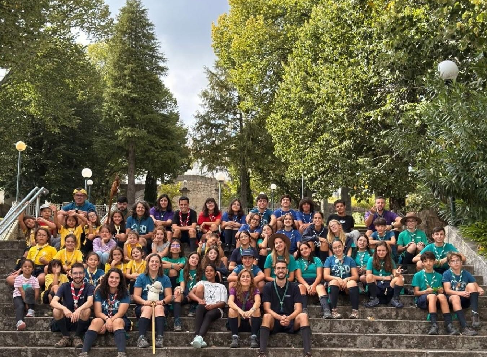
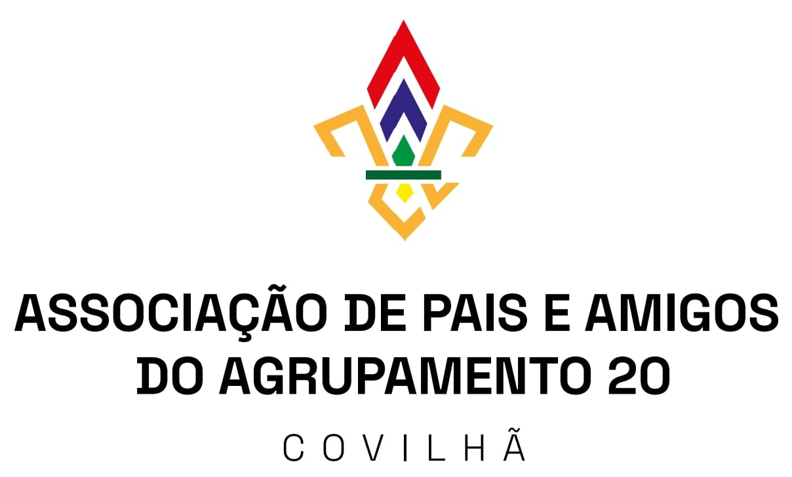

Quem somos
O Agrupamento 20
Fundado em 1925 na Covilhã, celebrou o centenário em 2025 — e mantém a mesma vontade de ajudar cada criança e jovem a crescer por inteiro.
A nossa missão
Crescer por inteiro
Ajudamos cada criança e jovem a crescer por inteiro. Autónomos, solidários, responsáveis e comprometidos. A natureza como sala de aula, o jogo como ferramenta, a fé como horizonte.
Somos um agrupamento do Corpo Nacional de Escutas — Escutismo Católico Português, o maior movimento de juventude do país. Ao longo dos últimos anos temos sido cerca de uma centena — crianças, jovens e dirigentes voluntários — em quatro secções.

A nossa história
Desde 1925
1925
Nasce o Agrupamento 20, dois anos depois da fundação do Corpo Nacional de Escutas em Braga. É o agrupamento mais antigo da Região da Guarda e um dos mais antigos em atividade em Portugal.
2025 · Centenário
Cem anos de escutismo na Covilhã — celebrar o passado, construindo o futuro.
Hoje
Cerca de uma centena de elementos, ano após ano, em quatro secções — Lobitos, Exploradores, Pioneiros e Caminheiros — com uma equipa de dirigentes voluntários.
Onde estamos
Sede
CNE Agrupamento 20 Covilhã
Casa do Escuteiro
Rua de São Salvador, n.º 17
6200-020 Covilhã
Reuniões aos sábados, das 15h00 às 17h00.
A que pertencemos
Paróquia, Região, Movimento
- Paróquia da Covilhã Urbana (Diocese da Guarda) — ligados à Igreja do Sagrado Coração de Jesus (São Tiago)
- Região da Guarda do Corpo Nacional de Escutas
- Corpo Nacional de Escutas — Escutismo Católico Português
- Movimento escutista mundial

Pais e famílias
APAA20
A Associação de Pais e Amigos do Agrupamento 20: famílias e amigos que apoiam a vida do Agrupamento.